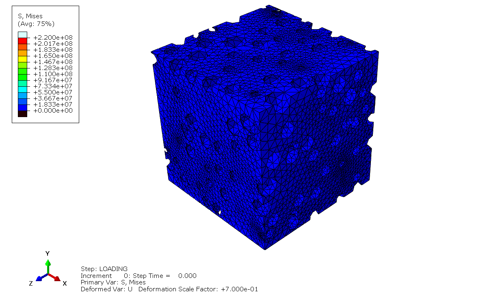

Porous Material Simulation
Skills :
Description :
Foamed glass is a promising material gaining popularity in the construction industry for its excellent insulation properties and lighter weight compared to traditional glass. What makes it even more attractive is that it’s made from recycled waste glass, which helps reduce pollution and greenhouse gas emissions, making it more environmentally friendly. In this study, we’re focusing on how the material’s structure—particularly the porosity and the distribution of pores—affects its mechanical properties. By simulating different levels of porosity, we aim to better understand how these factors influence the material’s strength, flexibility, and overall suitability for use in construction, where both performance and sustainability are key.
In the modeling phase, MATLAB was used to generate geometries with porous shapes, where the pores were represented as spheres with varying sizes. These pores were randomly distributed within a specified volume using the Monte Carlo technique, which helped minimize their overlap and create more realistic distributions. The models were created for three different porosity levels—10%, 30%, and 50%—to study how varying pore densities affect the material’s mechanical behavior. This approach allowed for a deeper understanding of how different porosity levels could influence the performance of foamed glass.
Once the geometries were created, they were imported into Abaqus through a Python script, which automated the preprocessing for mechanical analysis. Boundary conditions were applied to specific nodes to evaluate the material’s response to a 20% deformation. By recording the reaction force at the constrained node and using the surface area, the stress was calculated. The stress-strain relationship was then analyzed to determine the material’s elastic modulus, shedding light on how porosity affects stiffness and deformation. The findings showed that higher porosity reduced stiffness due to the presence of air gaps, which weakened the material's mechanical structure. These insights are valuable for optimizing foamed glass for use in construction, ensuring it meets both performance and sustainability goals.
Get in Touch
Website designed and developed by me using template provided by HTML5 UP © 2024. All rights reserved.